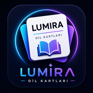

Bu uygulama Lumira tarafından geliştirilmekte ve işletilmektedir. Gizlilikle ilgili tüm soru ve talepleriniz için: @muhammedf.fdn
Hiçbir veri sunucumuza gönderilmez. Öğrendiğiniz kelimeler, favorileriniz, ayarlarınız ve ilerlemeniz yalnızca tarayıcınızın yerel deposunda (localStorage) cihazınızda saklanır. Bu verilere biz erişemeyiz.
| Veri | Neden |
|---|---|
| Kullanıcı adı | Liderlik tablosunda görünmek ve hesabınızı tanımlamak |
| Şifre | Hesabınızı korumak. Şifreler Google Firebase Authentication tarafından şifrelenmiş biçimde saklanır; bizim tarafımızdan görülemez. |
| Çalışma süresi | Liderlik tablosundaki “Vakit” sıralaması |
| XP ve seviye | Liderlik tablosundaki “Seviye” sıralaması |
| Kelime ilerlemesi | Cihaz değiştirdiğinizde ilerlemenizin kaybolmaması |
E-posta adresi, telefon numarası, konum, kişi listesi, fotoğraf veya cihaz kimliği toplamıyoruz. Uygulama kamera, konum veya rehber izni istemez. Canlı çeviri için yalnızca özelliği başlattığınızda mikrofon izni istenir.
Uygulama içinde oluşan teknik hatalar, sorun gidermek amacıyla yalnızca cihazınızda kaydedilir. Bu kayıtları siz göndermeyi seçmedikçe bize ulaşmaz. Reklam kimliği kullanmıyoruz ve izleme çerezi yerleştirmiyoruz.
Canlı çeviride yapılandırılmış hizmetler sırasıyla Microsoft Azure Speech, Google Gemini, Groq ve Cloudflare’dır. Sesiniz, konuşma metniniz ve seçtiğiniz çeviri dili, o anda çalışan sağlayıcıya tanıma ve çeviri amacıyla iletilir. Bir hizmet kullanılamadığında sıradakine otomatik geçilebilir. Groq ve Cloudflare modunda kısa ses parçaları Lumira’nın Netlify sunucu işlevinden ilgili sağlayıcıya aktarılır; uygulama bu sesleri veya çeviri metinlerini veritabanına kalıcı olarak kaydetmez. Sağlayıcıların kendi saklama ve kullanım koşulları ilgili hizmetin politikasına tabidir. Bulut hizmetleri kullanılamadığında desteklenen cihazlarda ücretsiz cihaz motoruna geçilir. Bu yedek modda konuşma tanıma ve çeviri cihazınızda yapılır; sesiniz ve konuşma metniniz uygulamanın sunucusuna ya da bir çeviri API’sine gönderilmez. Ses yalnızca işlenmek üzere kısa süreli bellekte tutulur ve kalıcı olarak kaydedilmez. Durdur düğmesi mikrofon erişimini kapatır.
Açık konuşma modeli ilk kullanımda Hugging Face üzerinden, Firefox çeviri modelleri Mozilla’nın herkese açık Google Cloud Storage deposundan, çalışma bileşenleri jsDelivr ve Lumira üzerinden cihazınıza yüklenebilir ve tarayıcı önbelleğinde tutulur. Bu indirmeler normal internet bağlantı bilgilerini ilgili sağlayıcılara iletir; konuşma içeriğiniz indirme isteğine eklenmez. Kullanım hakkınızın doğrulanması için internet bağlantısı gerekir. Açık kaynak bileşenleri ve lisansları.
Sunucu tarafındaki veriler Google Firebase (Realtime Database ve Authentication) altyapısında saklanır. Google’ın gizlilik politikası: policies.google.com/privacy
Kelime seslendirmesi için cihazınızın kendi ses motoru kullanılır. Cihaz seslendirmesi çalışmadığında, yalnızca okunacak kelime Google’ın seslendirme servisine iletilir; bu istek kimliğinizle ilişkilendirilmez.
Kontrol için gönderdiğiniz metin, seçilen dile göre LanguageTool’a veya sunucuda yapılandırılmış Google Gemini / Groq hizmetine iletilir. Lumira yazma metninizi kullanım sayacına kaydetmez. Hesabınızın son 24 saatlik yazma ve mikrofon kullanım süreleri, PDF oluşturma sayısı ve doğrulanmış destek rozeti hakları Firebase’de saklanır. Google Play satın alımlarının doğrulanması için ürün kimliği ve satın alma makbuzu sunucuda işlenir. Cihazda saklanan hak özeti çevrimdışı erişimde kullanılabilir.
GitHub Pages üzerinden açılan Lumira da kimlik ve kullanım hakkı denetimleri, sesli çeviri ve yazma kontrolü için lumira-tr.com üzerindeki aynı sunucu işlevlerini kullanır. API anahtarları tarayıcıya gönderilmez.
Hazır sözlükteki bir örneğin seçtiğiniz dilde çevirisi yoksa, yalnızca o hazır cümle ve dil kodları Gemini, Groq veya Cloudflare hizmetine gönderilebilir. Kişisel defterinize yazdığınız özel cümleler bu akışa gönderilmez. Otomatik çeviriler bu şekilde işaretlenir; öğrenen kişinin kimliğini içermeyen sonuç ortak sunucu önbelleğinde ve çevrimdışı gösterim için cihazınızda saklanabilir. İstek sınırları için hesaba bağlı kısa süreli sayaç tutulur; ses ve yazma pratiği haklarından kullanım düşülmez.
Verilerinizi satmıyor, kiralamıyor ve pazarlama amacıyla üçüncü taraflarla paylaşmıyoruz. Yalnızca kullanıcı adınız, çalışma süreniz ve seviyeniz — liderlik tablosunun doğası gereği — diğer kullanıcılara görünür. Gerçek adınızı kullanmak zorunda değilsiniz.
Hesabınıza ait veriler, siz silinmesini talep edene kadar saklanır. Cihazınızdaki veriler ise uygulama verilerini temizlediğinizde ya da uygulamayı kaldırdığınızda silinir.
Bu haklarınızı kullanmak için Instagram üzerinden bize ulaşabilirsiniz.
Uygulama her yaş için uygundur ve eğitim amaçlıdır. 13 yaşından küçük kullanıcılardan bilerek kişisel veri toplamayız. Böyle bir veri toplandığını fark edersek gecikmeksizin sileriz. Ebeveynler, çocuklarının verilerinin silinmesini talep edebilir.
Tüm bağlantılar HTTPS ile şifrelenir. Veritabanı kuralları, her kullanıcının yalnızca kendi verisine erişebileceği biçimde yapılandırılmıştır. Şifreler tarafımızca hiçbir zaman düz metin olarak saklanmaz veya görüntülenmez.
Uygulama içi destek ödemeleri Google Play üzerinden gerçekleştirilir. Kart bilgileriniz bize hiçbir zaman ulaşmaz; ödeme verilerini Google işler. Bizim tarafımızda yalnızca kazandığınız rozet bilgisi tutulur.
Bu politikayı zaman zaman güncelleyebiliriz. Önemli değişikliklerde uygulama içinde bilgilendirme yaparız. Sayfanın başındaki tarih, son güncelleme tarihini gösterir.